Chapter 11 Visualize looks to each image type
We continue our exploration of the raw data by aggregating looks to each image type.
Earlier we cleaned the data to remove trials with excessive missing data and blocks of trials with too few trials. Read in that data.
Plot growth curves to each AOI.

The looks to target increase year over year which decreases the remaining proportion of looks for the other three images each year. To study the relative propensity of looking to each image, we instead can use the log-odds of looking to each AOI versus the unrelated image.
#> Warning: Removed 10559 rows containing non-finite values (stat_smooth).
Each curve is the log odds of looking to the target, phonological foil, and semantic foil versus the unrelated word. Positive values mean more looks to an image type than the unrelated. If you think of the y axis as the image’s relatedness to the target, you can see a time course of relatedness in each panel: Here early phonological effects meaning early relatedness and later, flatter semantic effects meaning late relatedness. (These effects make even more sense sense if phonological representations affect processing before semantic ones.)
This plot suggests an important finding: Children becoming more sensitive to the phonological and semantic foils as they grow older. (I use the verb suggest because this is still a preliminary, unmodeled finding.) Jan and I had made opposite predictions about whether this would happen. Her argument, I think, was that children become better at word recognition by becoming better able to inhibit interference from competing words. This plot would suggest that they show increased sensitive to the target and foils words by looking less to the unrelated word as they age and reapportioning those looks to the other three lexically relevant words.
11.1 Comparing strong versus weak foils
In Law et al. (2016), we ignored trials for certain items where we didn’t think the phonological or semantic similarity was strong enough. The two sets of phonological foils are shown below.
| Target | PhonologicalFoil | SemanticFoil | Unrelated |
|---|---|---|---|
| bear | bell | horse | ring |
| bee | bear | fly | heart |
| bell | bee | drum | swing |
| dress | drum | shirt | swing |
| drum | dress | bell | sword |
| flag | fly | kite | pear |
| fly | flag | bee | pen |
| heart | horse | ring | bread |
| heart | horse | ring | pan |
| horse | heart | bear | pan |
| pan | pear | spoon | vase |
| pan | pear | spoon | bell |
| pear | pen | cheese | ring |
| pear | pen | cheese | vase |
| pen | pear | sword | van |
| vase | van | gift | swan |
| Target | PhonologicalFoil | SemanticFoil | Unrelated |
|---|---|---|---|
| bread | bear | cheese | vase |
| cheese | shirt | bread | van |
| gift | kite | vase | bread |
| kite | gift | flag | shirt |
| ring | swing | dress | flag |
| shirt | cheese | dress | fly |
| spoon | swan | pan | drum |
| swan | spoon | bee | bell |
| swan | spoon | bee | ring |
| swing | spoon | kite | heart |
| sword | swan | pen | gift |
| van | pan | horse | sword |
The stronger phonological foils are pairs where the syllable onsets are the same. The weaker foils include rime pairs, pairs where the words have different syllable onsets, and pairs where the onsets differ by a phonetic feature.
| Target | PhonologicalFoil | SemanticFoil | Unrelated |
|---|---|---|---|
| bear | bell | horse | ring |
| bee | bear | fly | heart |
| bell | bee | drum | swing |
| bread | bear | cheese | vase |
| cheese | shirt | bread | van |
| dress | drum | shirt | swing |
| drum | dress | bell | sword |
| fly | flag | bee | pen |
| horse | heart | bear | pan |
| pan | pear | spoon | vase |
| pan | pear | spoon | bell |
| pear | pen | cheese | ring |
| pear | pen | cheese | vase |
| shirt | cheese | dress | fly |
| spoon | swan | pan | drum |
| Target | PhonologicalFoil | SemanticFoil | Unrelated |
|---|---|---|---|
| flag | fly | kite | pear |
| gift | kite | vase | bread |
| heart | horse | ring | bread |
| heart | horse | ring | pan |
| kite | gift | flag | shirt |
| pen | pear | sword | van |
| ring | swing | dress | flag |
| swan | spoon | bee | bell |
| swan | spoon | bee | ring |
| swing | spoon | kite | heart |
| sword | swan | pen | gift |
| van | pan | horse | sword |
| vase | van | gift | swan |
The strong semantic foils belong to the same category and the weaker ones have a less obvious relationship (ring and dress).
We visually confirm that the strong versus weak foils behave differently.
#> Warning: Removed 48304 rows containing non-finite values (stat_smooth).
#> Warning: Removed 43071 rows containing non-finite values (stat_smooth).
What’s going on here:
- The weak phonological foils are indeed weaker than the strong foils.
- The strong semantic foils appear stronger than the weak ones. The strong foils show a growth curve pattern of increasing looks away from baseline and there a developmental difference among the growth curves for each time point.
- Children have a lower advantage for the target (vs unrelated) in weak foil trials because… why? My reading is that if the semantic or phonological foil is effective, children will look at it instead of the unrelated image. Conversely, if the semantic or phonological foil are less effective, children will look more to the unrelated image, which pulls down the ratio of looks to target versus the unrelated image.
In the above plots, we fixed the denominator to be the number of looks to the unrelated image and varied the numerator. In the plots below, we fix the numerator to be the looks to the target and vary the denominator to looks to target versus looks to each foil.
#> Warning: Removed 37498 rows containing non-finite values (stat_smooth).
Curves in both panels attain the same height, so phonological and unrelated foils affect processing equally later in the trial. The strong phonological foils curves in the Target vs Phonological comparison rise later than the weak foils, reflecting early looks to the phonological foils.
#> Warning: Removed 29775 rows containing non-finite values (stat_smooth).
Curves in the two panels do not attain the same height, so the semantic foil reduces odds of fixating to the target later on in a trial. There appears to be no difference in strong and weak foils in Year 2 and Year 3, so I might be able to collapse to remove this distinction and include more items in the analysis.
11.2 Preparing data for the model
#> Modelling options:
#> List of 4
#> $ bin_width : num 3
#> $ start_time: num 250
#> $ end_time : num 1500
#> $ bin_length: num 50
#> As in the earlier models, we downsampled the data into 50-ms (3-frame) bins in order to smooth the data. We modeled the looks from 250 to 1500 ms. Lastly, we aggregated looks by child, study and time, and created orthogonal polynomials to use as time features for the model
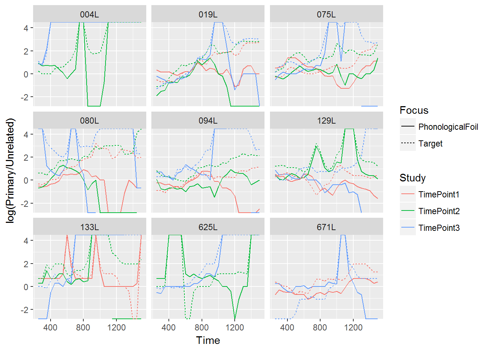
The final model should looks like this. I’ll have to run this for a few days.
# phon_d <- phon_d %>%
# filter(Focus == "PhonologicalFoil")
#
# library(rstanarm)
# options(mc.cores = parallel::detectCores())
#
# m <- stan_glmer(
# cbind(Primary, Unrelated) ~
# Study * (ot1 + ot2 + ot3) +
# (ot1 + ot2 + ot3 | ResearchID) +
# (ot1 + ot2 + ot3 | Study:ResearchID),
# family = binomial,
# prior = normal(0, 1, autoscale = FALSE),
# prior_intercept = normal(0, 2),
# prior_covariance = decov(2, 1, 1),
# control = list(adapt_delta = .99),
# data = phon_d)
# readr::write_rds(m, "./data/stan_aim1_phon_model2.rds.gz")For this model structure, we estimate two growth curves simultaneously for each year of the study. Each growth curve is the log-odds of fixating on a certain image relative to the unrelated image. We use an indicator variable focus to record whether the image is the target or the phonological foil.
Actually, I am not sure I need to estimate two growth curves simulataneously yet. I could just estimate log-odds of looking to Phonological vs Unrelated directly. This would let me estimate year over year changes, the time course of the effects and maybe some individual differences in looks to the phonological foil. I could posterior-predict looks at each time bin and see how the intervals compare to zero.
Hmmm, this is not working quite right yet.
11.3 Looks to the phonological foil
n_phon <- phono_foils$strong_foil$Target %>% unique() %>% length()
n_semy <- semy_foils$strong_foil$Target %>% unique() %>% length()Next, we asked how children’s sensitivity to the phonological foils changed over developmental time. We only examined trials for which the phonological foil and the noun shared the same syllable onset. For example, we kept trials with dress–drum, fly–flag, or horse–heart, but we excluded trials kite–gift (feature difference), bear–bread (onset difference), and ring–swing (rimes). We kept 13 of the 24 trials.
Because children looked more to the target word with each year of the study, they necessarily looked less to the distractors each year.

We fit a generalized additive model with restricted maximum likelihood (ref, ref). We included main-effects of study year. These parametric terms work like conventional regression effects and determined the growth curve’s average values. We used timepoint 2 as the reference year, so the model’s intercept represented the average looking probability for timepoint 2. The model’s year effects therefore represented differences between timepoint 2 vs. timepoint 1 and vs. timepoint 3.
(We used empirical logits and a normal likelihood to compsensate for sparse data.)
We also included smooth terms for time. These smooth terms fit nonlinear functions of data by weighting and adding small bumps (splines) together—hence the name additive models. We included a smooth term for trial time to represent a general effect of time following noun onset across all studies, and we also included smooth terms for time for each study. As an equation, our model estimated:
emp. logit(phonological vs unrelated) =
α + β1*Study1 + β2*Study3 + [growth curve averages]
f1(Time) + [general shape]
f2(Time, Study1) + [study-specific shape]
f3(Time, Study2) +
f4(Time, Study3) The average values for timepoint 1 and timepoint 2 did not significantly differ (stats). The average looks to the phonological foil over the unrelated was significantly higher in year 3 (stats).
There was a significant smooth term for time in general and for time in timepoint 1. This means that shape of the curves for timepoint2 and timepoint 3 did not differ significantly from the general time trend. In other words, timepoint 2 and timepoint 3 had the same shape but with a difference in height due to different averages.
#>
#> Family: gaussian
#> Link function: identity
#>
#> Formula:
#> elog ~ S + s(Time) + s(Time, by = S)
#>
#> Parametric coefficients:
#> Estimate Std. Error t value Pr(>|t|)
#> (Intercept) 0.15083 0.01243 12.132 < 2e-16 ***
#> STimePoint1 0.01294 0.01764 0.733 0.463
#> STimePoint3 0.14367 0.01783 8.056 8.24e-16 ***
#> ---
#> Signif. codes: 0 '***' 0.001 '**' 0.01 '*' 0.05 '.' 0.1 ' ' 1
#>
#> Approximate significance of smooth terms:
#> edf Ref.df F p-value
#> s(Time) 6.760 7.848 40.062 < 2e-16 ***
#> s(Time):STimePoint2 1.005 1.011 0.377 0.542
#> s(Time):STimePoint1 2.851 3.746 10.521 6.39e-08 ***
#> s(Time):STimePoint3 1.005 1.009 0.036 0.851
#> ---
#> Signif. codes: 0 '***' 0.001 '**' 0.01 '*' 0.05 '.' 0.1 ' ' 1
#>
#> Rank: 38/39
#> R-sq.(adj) = 0.0226 Deviance explained = 2.31%
#> -REML = 39294 Scale est. = 1.3262 n = 25168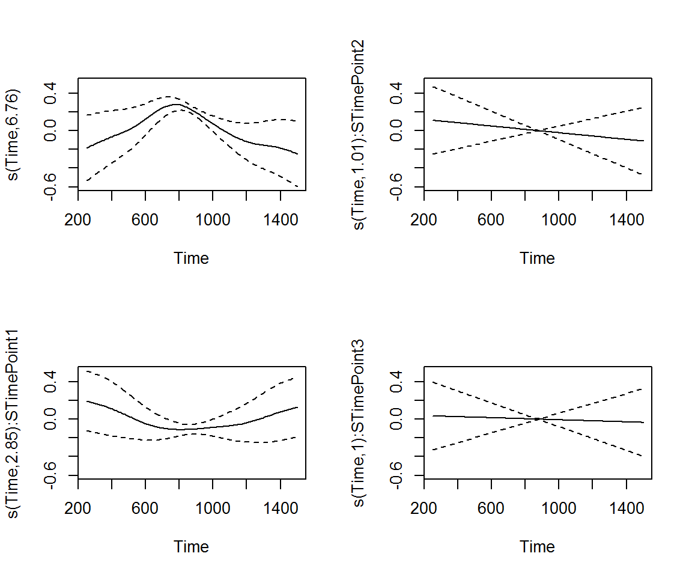
#> df AIC
#> b2n 9.046092 78665.37
#> b2 16.269200 78547.45The model’s predictions are shown in the figure. It captured the trend for increased looks to the competitor image with each year of the study.
#> Summary:
#> * S : factor; set to the value(s): TimePoint1, TimePoint2, TimePoint3.
#> * Time : numeric predictor; with 30 values ranging from 250.000000 to 1500.000000.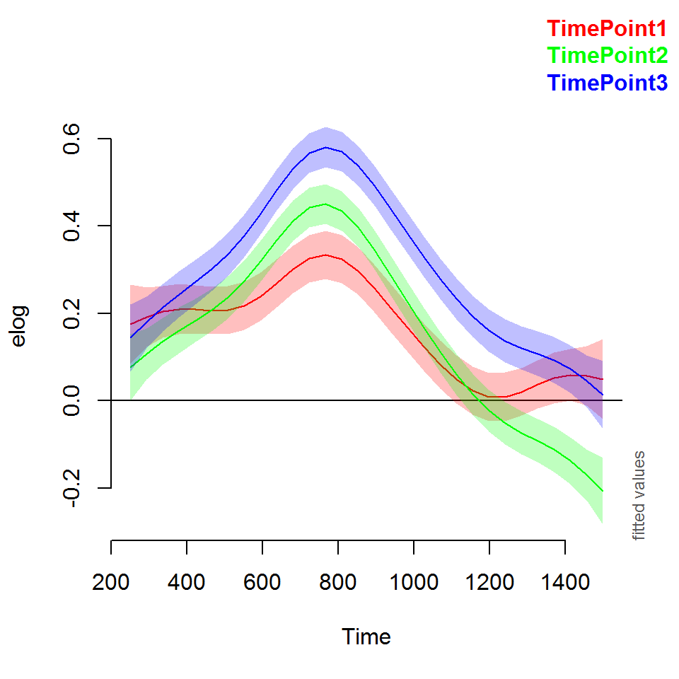
We also computed the difference of the curves from different studies. The peaks of the timepoint1 and timepoint2 were significantly different from 565 to 970 ms. This result confirms that the looks to the phonological foil increased from timepoint 1 and timepoint 2 in the time window immediately following presentation of the noun.
#> Summary:
#> * Time : numeric predictor; with 100 values ranging from 250.000000 to 1500.000000.
#>
#> Time window(s) of significant difference(s):
#> 565.656566 - 969.696970
#> 1247.474747 - 1500.000000The difference between the timepoint 2 and the timepoint 3 smooths is driven by the the intercept difference. The difference line between the two is a straight line. The two curves start from the same location and diverge, and that’s what this straight line captures.
#> Summary:
#> * Time : numeric predictor; with 100 values ranging from 250.000000 to 1500.000000.
#>
#> Time window(s) of significant difference(s):
#> 262.626263 - 1500.000000Timepoint 3 and timepoint 1 differ too.
#> Summary:
#> * Time : numeric predictor; with 100 values ranging from 250.000000 to 1500.000000.
#>
#> Time window(s) of significant difference(s):
#> 439.393939 - 1323.232323Here we have the data and the model fits.

itsadug::gamtabs(b2, type = "html")11.4 Looks to the semantic foil
We used a similiar procedure on the looks to the semantic foil.
n_semy <- semy_foils$strong_foil$Target %>% unique() %>% length()Next, we asked how children’s sensitivity to the semantic foils changed over developmental time. We only examined trials for which the semantic foil and the noun were part of the same category. We kept trials, for example, with bee–fly, shirt–dress, or spoon–pan, but we excluded trials where the similarity was perceptual (sword–pen) or too abstract (swan–bee). We kept 13 of the 24 trials.
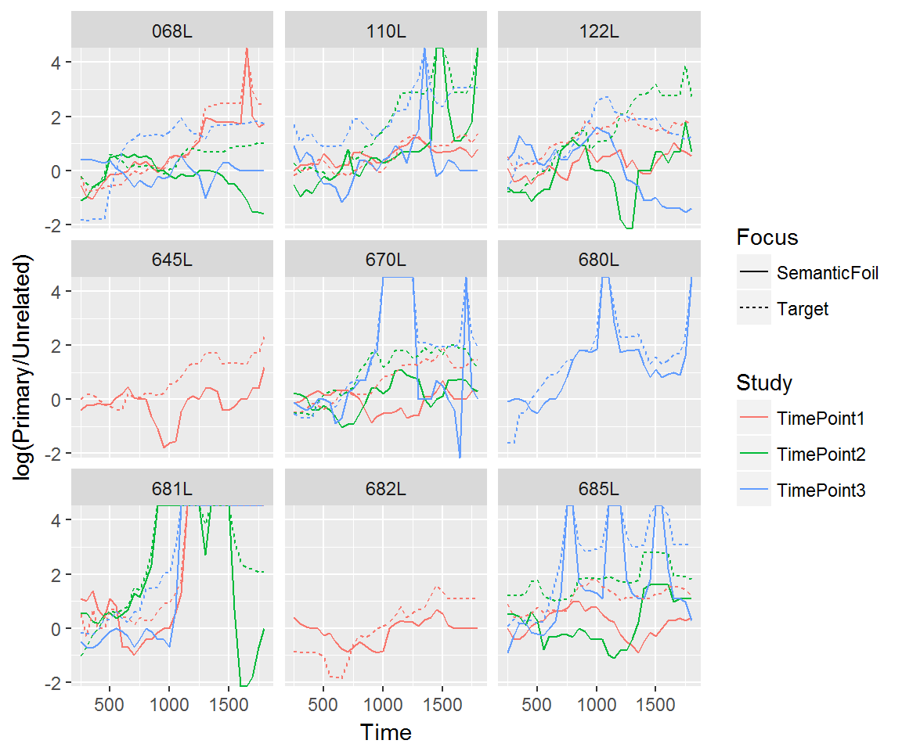
#>
#> Family: gaussian
#> Link function: identity
#>
#> Formula:
#> elog ~ S + s(Time) + s(Time, by = S)
#>
#> Parametric coefficients:
#> Estimate Std. Error t value Pr(>|t|)
#> (Intercept) 0.43802 0.01097 39.919 < 2e-16 ***
#> STimePoint1 -0.12954 0.01557 -8.322 < 2e-16 ***
#> STimePoint3 0.07938 0.01574 5.043 4.6e-07 ***
#> ---
#> Signif. codes: 0 '***' 0.001 '**' 0.01 '*' 0.05 '.' 0.1 ' ' 1
#>
#> Approximate significance of smooth terms:
#> edf Ref.df F p-value
#> s(Time) 6.792 7.879 27.318 < 2e-16 ***
#> s(Time):STimePoint2 1.078 1.142 0.605 0.422443
#> s(Time):STimePoint1 1.143 1.261 0.286 0.705947
#> s(Time):STimePoint3 2.699 3.567 6.321 0.000141 ***
#> ---
#> Signif. codes: 0 '***' 0.001 '**' 0.01 '*' 0.05 '.' 0.1 ' ' 1
#>
#> Rank: 38/39
#> R-sq.(adj) = 0.0711 Deviance explained = 7.15%
#> -REML = 47702 Scale est. = 1.2714 n = 30976
#> df AIC
#> s2n 9.165313 95563.23
#> s2 16.898148 95363.53The model’s predictions are shown in the figure. It captured the trend for increased looks to the competitor image with each year of the study.
#> Summary:
#> * S : factor; set to the value(s): TimePoint1, TimePoint2, TimePoint3.
#> * Time : numeric predictor; with 30 values ranging from 250.000000 to 1800.000000.
We also computed the difference of the curves from different studies. The difference from timepoint 1 to timepoint 2 is just a matter of height.
#> Summary:
#> * Time : numeric predictor; with 100 values ranging from 250.000000 to 1800.000000.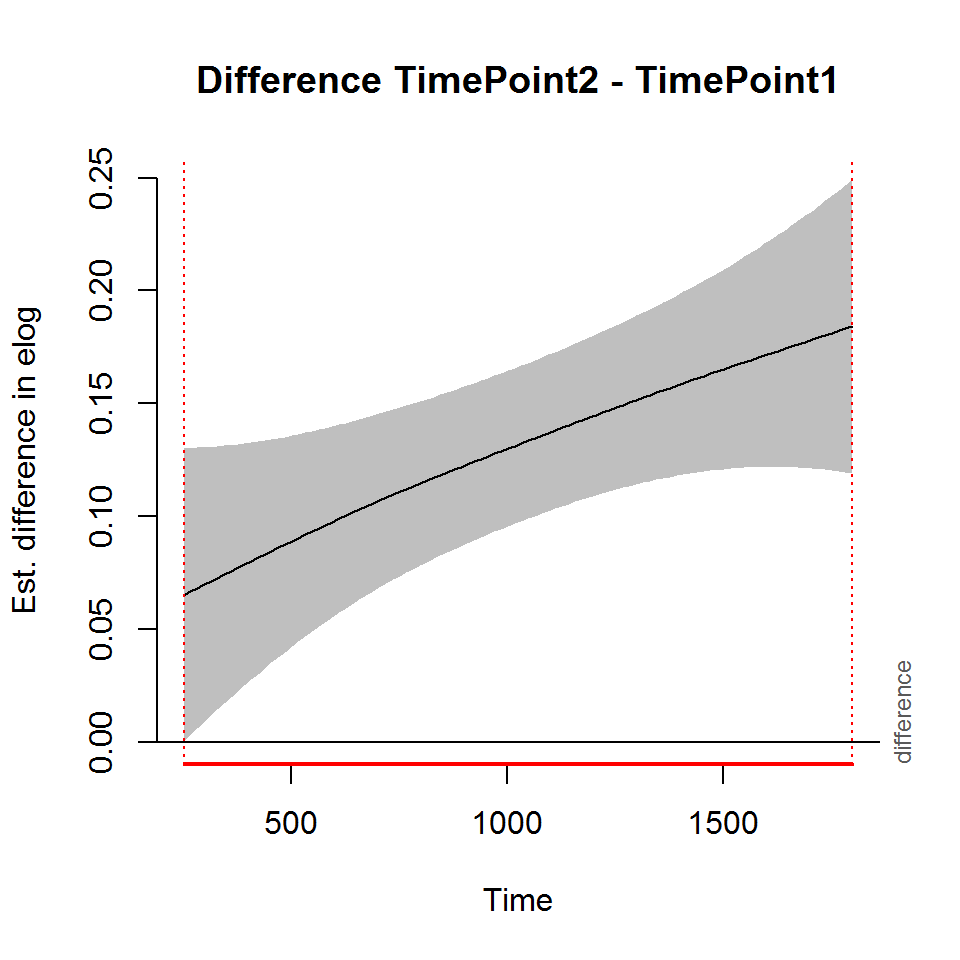
#>
#> Time window(s) of significant difference(s):
#> 250.000000 - 1800.000000The difference from timepoint 2 to timepoint 3 includes a slight bump as the two curves diverge from a similar starting position.
#> Summary:
#> * Time : numeric predictor; with 100 values ranging from 250.000000 to 1800.000000.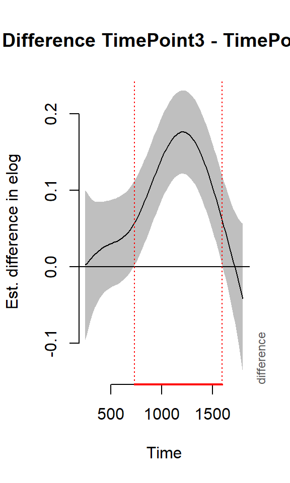
#>
#> Time window(s) of significant difference(s):
#> 735.353535 - 1596.464646Timepoint 3 and timepoint 1 differ too.
#> Summary:
#> * Time : numeric predictor; with 100 values ranging from 250.000000 to 1800.000000.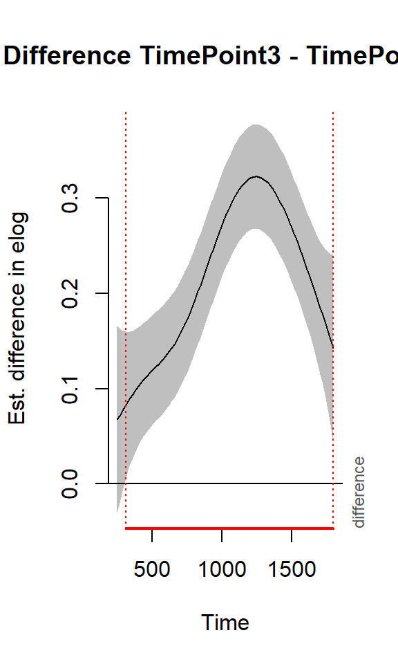
#>
#> Time window(s) of significant difference(s):
#> 312.626263 - 1800.000000Here we have the data and the model fits.
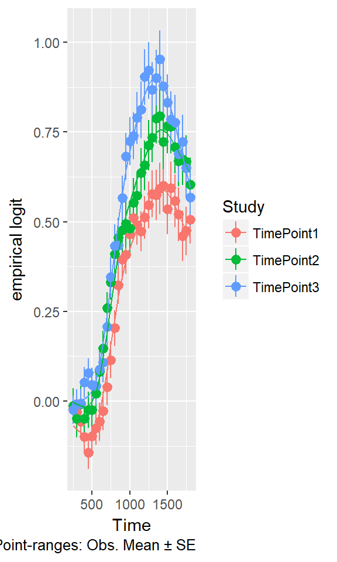
itsadug::gamtabs(s2, type = "html")11.5 Look for individual differences in competitor sensitivity
[…put this on hold for a while…]
#> Parsed with column specification:
#> cols(
#> .default = col_integer(),
#> Study = col_character(),
#> ResearchID = col_character(),
#> Female = col_logical(),
#> Male = col_logical(),
#> MAE = col_logical(),
#> AAE = col_logical(),
#> Maternal_Education_LMH = col_character(),
#> MinPair_ProportionCorrect = col_double(),
#> SAILS_ProportionTestCorrect = col_double()
#> )
#> See spec(...) for full column specifications.
#> Joining, by = "ResearchID"
#> `geom_smooth()` using method = 'gam'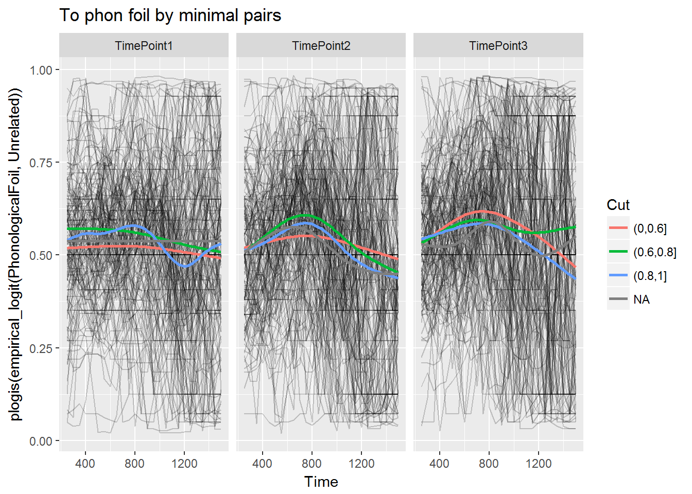
#> Joining, by = "ResearchID"
#> `geom_smooth()` using method = 'gam'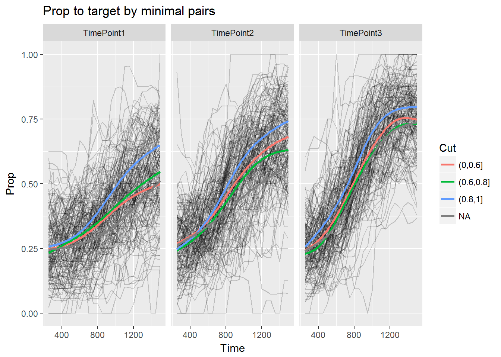
#> Parsed with column specification:
#> cols(
#> .default = col_integer(),
#> Study = col_character(),
#> ResearchID = col_character(),
#> Female = col_logical(),
#> Male = col_logical(),
#> MAE = col_logical(),
#> AAE = col_logical(),
#> Maternal_Education_LMH = col_character(),
#> MinPair_ProportionCorrect = col_double(),
#> SAILS_ProportionTestCorrect = col_double()
#> )
#> See spec(...) for full column specifications.
#> Joining, by = "ResearchID"
#> `geom_smooth()` using method = 'gam'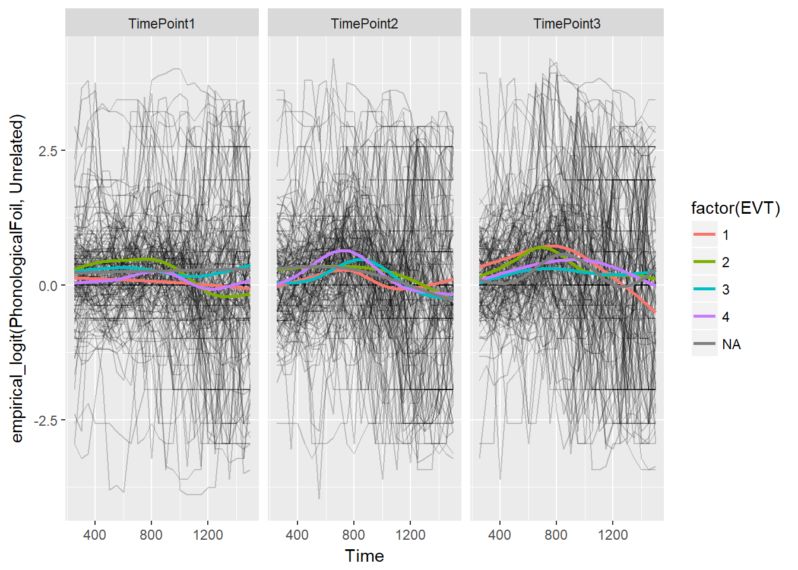
#> Joining, by = "ResearchID"
#> `geom_smooth()` using method = 'gam'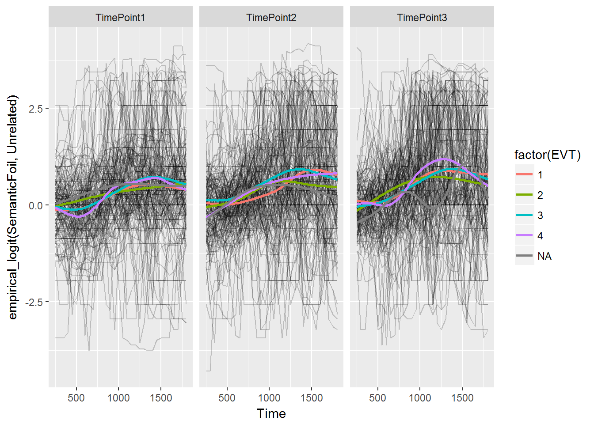
#> Joining, by = "ResearchID"
#> `geom_smooth()` using method = 'gam'
11.6 Interim summary
- Visual evidence that the semantic foil and phonological foil become more relevant (compared to unrelated foil) each year.
- Our previous distinction between strong and weak foils still applies, although it might be better to exclude only the (a priori) weakest foils, like the rime phonological foils.
References
Law, F., II, Mahr, T., Schneeberg, A., & Edwards, J. R. (2016). Vocabulary size and auditory word recognition in preschool children. Applied Psycholinguistics. doi:10.1017/S0142716416000126